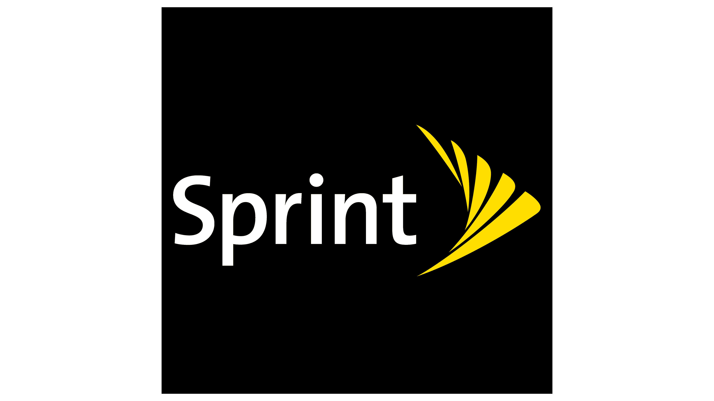

Experience and Results Matter
With more than 20 years of experience in marketing at major corporations across multiple industries, I have a proven track record of driving growth and delivering results.
I am passionate about leveraging technology to create engaging and user-friendly experiences that resonate with customers. I turn complexity into clarity, creating innovative and scalable solutions that work for customers, teams, and the business.
I thrive at the intersection of marketing, technology and customer experience. Most recently, I decided to explore website design.
Explore this collection of my projects and resume to learn more about my journey and the impact I've made.

Recognition and Awards
- T-Mobile PEAK Achievement Award (highest award ~200 winners in company, nominated 4x for 3 programs, won 1x - 2022) (2021-2024)
- HR Spotlight Award (2023)
- PRNEWS Platinum Award - Employee Event - Day of Learning (2023)
- vFairs Eventeer Awards - Best Out of the Box Event, T-Mobile CareerFest (2023)
- Junior League of Kansas City, Missouri
- Active Achievement Award (awarded to Top Active Member graduating to Sustainer) 5/2020
- GEM Award Winner(multiple times; 2015-2020)
- Above and Beyond Award (5/2015)
- National Panelist and Presenter at Industry Conferences - RIS Media and PREA AdFocus (9/2007, 9/2008)
- PruCARES Grant Award Winner (2006-2008, 2011)
- Fremont Ross High School Athletic Hall of Fame (Inducted 5/2006)
Hear What Others Say
- "Dena is a total rock star … Her passion and dedication are unmatched. Dena is one of the exceedingly rare people who is both an incredible forward thinker and an achiever who can bring the vision to life. Dena is fearless when it comes to thinking outside of the normal process to innovate solutions that improve the needed experience … She thrives as a problem solver and excels at anything she tackles."
- Corby Malik, Sr. Manager, T-Mobile Migration Team - "When I think of the top outstanding leaders at T-Mobile, Dena consistently comes to mind. Her passion, professionalism and knowledge are undeniable ... No matter the role - ICs to all levels of leadership, she makes people feel heard, respected, and included … This initiative was very visible across the entire company, and she consistently demonstrated confidence and polish no matter the situation … I can confidently say the team was proud to follow her the entire way…"
- Denise Johnson, Sr. Project Manager (stretch assignment for first Day of Learning - Data & AI) - "Your ability to adapt to the needs of the moment have made a significant impact on keeping these (critical initiatives) moving forward smoothly … Your contributions make a difference in creating an environment where everyone can thrive and succeed."
- Barb Schlittenhard, Sr. Director, T-Mobile Learning & Development